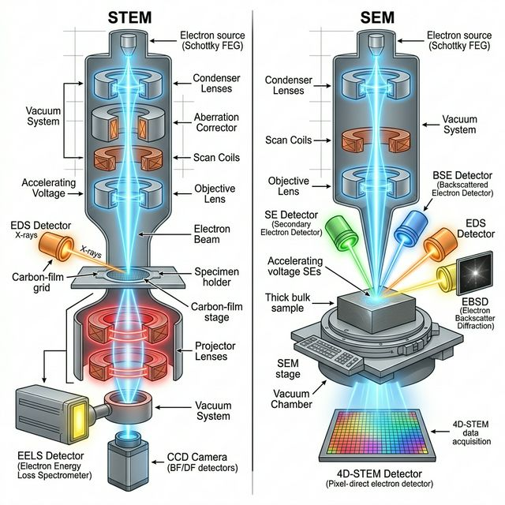
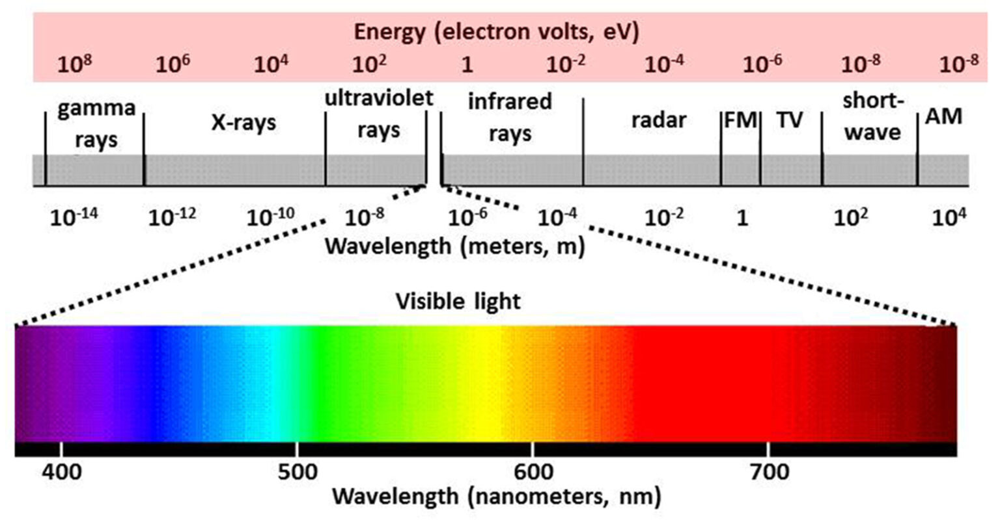
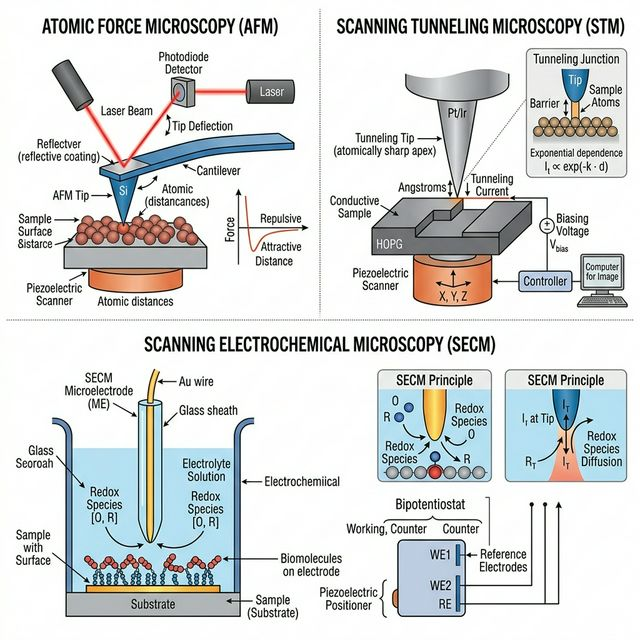
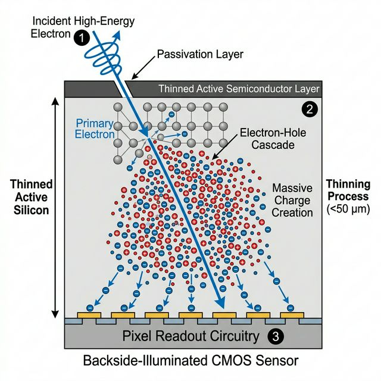

Machine Learning in Materials Processing & Characterization
Unit 2: Physics of Data Formation
Prof. Dr. Philipp Pelz
FAU Erlangen-Nürnberg


01. From Physical Sensing to ML
- How does a material property become a data point?
- Transition from physical process \(\xi(t)\) to digital value \(x_i\).
- Understanding the physics of sensing is crucial for selecting appropriate ML models (priors).
- Physics of Sensing: From photons to digits.
02. The Five Fundamental Probes
To understand data, we first ask: What is probing the sample?
- Electrons: Charged, low mass. High spatial resolution.
- Photons: Massless, uncharged. Penetrating, probes bonds & crystals.
- Ions: Massive, charged. Huge momentum transfer (sputtering).
- Neutrons: Massive, uncharged. Deep nuclear penetration.
- Physical Forces: Van der Waals, Pauli repulsion, tunneling (macroscopic/nanoscale probes).
- The choice of probe dictates the physical interaction, which determines the resulting data format (2D projection vs 3D volume, surface vs bulk).

03. Electron Interactions
Physics of the Probe:
- Electrons are negatively charged and have low mass.
- Strong Coulomb interactions with both nucleus and electron cloud.
- High interaction cross-section = low penetration depth (surface sensitive).
- Easily focused using magnetic lenses to sub-Ångström spot sizes.
Information & Data Format:
- Elastic Scattering (Diffraction): Provides crystal structure (e.g., SAED).
- Inelastic Scattering (Energy Loss): Yields chemical/bonding information (EELS/EDXS).
- Data: High-resolution 2D real-space images (SEM/STEM), 2D reciprocal-space diffractions, or 1D spectra.

04. Photon Interactions (Vis & X-Ray)
Physics of the Probe:
- Electromagnetic waves (\(E=h\nu\)). They interact primarily with the electron cloud.
- Visible/IR: Low energy. Probes molecular bonds, vibrations, and bandgaps (Raman, FTIR).
- X-rays: High energy. Probes core-level electrons and long-range crystal periodicity (XRD, XPS). Highly penetrating.
Information & Data Format:
- Transverse wave-nature means no magnetic lenses \(\to\) harder to form sub-nm real-space probes compared to electrons.
- Excels at yielding bulk, macroscopic averages.
- Data: Often collected as 1D spectra (Intensity vs. Energy/Wavenumber/\(2\theta\)) or 2D diffraction spots.

Electromagnetic spectrum
05. Massive Particles: Ions & Neutrons
Ions:
- Massive, charged (e.g., Ga\(^+\), He\(^+\)).
- Transfer huge momentum (nuclear stopping).
- Used for milling/sputtering (FIB) and direct mass identification via Time-of-Flight (Atom Probe Tomography).
- Data: Focuses on direct 3D atomic reconstructions mapping isotopic mass to \((x,y,z)\) coordinates.

Neutrons:
- Massive, neutral.
- Interact only with the nucleus (strong force) and magnetic spin.
- Extremely deep penetration (can probe inside bulk steel parts).
- Data: Isotope-specific scattering (can easily distinguish Hydrogen from Deuterium). Magnetic structure diffraction.
06. Physical Probes & Forces
Physics of the Probe:
- A physical, nanoscopic tip interacts directly with the sample surface.
- Relies on fundamental forces: Van der Waals, electrostatic, or Pauli exclusion (repulsion).
- In Scanning Tunneling Microscopy (STM), it measures quantum electron tunneling probability.
Information & Data Format:
- Atomic Force Microscopy (AFM): Measures cantilever deflection via laser tracking.
- Yields true 3D spatial height maps (topography) of the surface, rather than a 2D projection.
- Data: 2D Topographic maps \(Z(X,Y)\), or Force-Distance curves measuring mechanical stiffness/adhesion.

07. Sensors as Transducers
- Sensors convert physical stimuli into electrical/digital signals.
- Stimuli: Photon intensity, electron scattering, temperature, stress.
- The mapping \(f: \text{Physical State} \to \text{Digital Representation}\).
- Every sensor has a characteristic transfer function and noise profile.
08. Example: CMOS Detectors for Optical Imaging
- Principle: Photons generate electron-hole pairs in a semiconductor.
- Architecture: Active Pixel Sensor (APS) – each pixel has its own amplifier.
- Transfer Function: Photons \(\rightarrow\) Charge \(\rightarrow\) Voltage \(\rightarrow\) Digital Number.
- Characteristics:
- High frame rates and parallel readout.
- Susceptible to readout noise and dark current (thermal electrons).
- High quantum efficiency for visible light.
09. Example: Scintillation Detectors (Indirect)
- Targets: High-energy X-rays or fast electrons (e.g., in EM).
- Two-Step Process:
- Incident particle hits a scintillator (e.g., YAG, CsI).
- Scintillator emits a flash of visible light.
- Light is collected by a standard CMOS/CCD.
- Trade-offs:
- Pro: Protects the silicon sensor from radiation damage.
- Con: The generated light scatters within the scintillator crystal.
- Result: Broad Point Spread Function (PSF) \(\to\) Loss of spatial resolution (blurring).
10. Example: Direct Detectors
- Targets: X-rays and high-energy electrons (e.g., Cryo-EM).
- Direct Process: Incident particle enters a thinned semiconductor layer directly.
- Physics: One incident high-energy particle generates a massive electron-hole cascade.
- Key Advantages:
- No scintillator intermediate \(\to\) no optical scattering.
- Extremely sharp Point Spread Function (PSF).
- High SNR allows precise single-particle counting with near-zero noise.

11. Spectrometers: Energy Resolution in EDXS
- Principle (Energy \(\to\) Charge):
- An X-ray photon strikes a semiconductor detector (e.g., Silicon Drift Detector).
- It creates \(N\) electron-hole pairs proportional to its energy: \(N = E / \epsilon\).
- Example: A 1 keV X-ray creates \(\sim 260\) pairs in Si (\(\epsilon \approx 3.8\) eV).
- Measurement:
- The total collected charge is converted to a voltage pulse.
- Pulse height \(\propto\) incoming X-ray energy.
- Resolution Limits:
- Governed by counting statistics (Fano noise) and electronic readout noise.
- Typical energy resolution is around \(\sim 130\) eV.
12. Spectrometers: Energy Resolution in EELS
- Principle (Energy \(\to\) Space):
- Fast electrons pass through the sample, undergoing inelastic scattering (losing energy).
- A magnetic prism then bends the electron trajectories (Lorentz force).
- Slower (energy-loss) electrons are bent slightly more than faster (zero-loss) ones.
- Measurement:
- The magnetic prism spatially disperses the electrons across a detector (e.g., CMOS or Direct Detector).
- Pixel position on the detector directly maps to energy loss \(\Delta E\).
- Resolution Limits:
- Governed by the energy spread of the electron gun (e.g., Cold FEG restricts spread) and spectrometer aberrations.
- State-of-the-art can achieve \(\sim 10\) meV resolution!
13. Continuous to Discrete Mapping
- Sampling: Measuring at discrete points \(\tau_i\).
- Neuer’s Sampling formula (Neuer et al. 2024): \[x_i = \xi(\tau_i + \delta t) + u_x\]
- \(\xi\): Underlying physical truth.
- \(\delta t\): Timing jitter/uncertainty.
- \(u_x\): Amplitude noise/uncertainty.
14. Temporal and Spatial Sampling
In Characterization:
- Pixel pitch (spatial resolution)
- Frame rate (temporal resolution)
- Energy binning (spectral resolution)
- Sampling Rate \(\nu_S = 1/\Delta t\).
- Spatial frequency \(k = 1/\Delta x\).
15. The Nyquist-Shannon Theorem
- To fully capture a signal with maximum frequency \(\nu_{max}\), we must sample at least twice as fast: \[\nu_S \ge 2\nu_{max}\]
- Nyquist Frequency: \(\nu_{Nyquist} = \frac{1}{2} \nu_S\).
- Frequencies above \(\nu_{Nyquist}\) cannot be resolved and cause artifacts.
16. Aliasing - When Resolution Fails
- If \(\nu_S < 2\nu_{max}\), high-frequency components are “folded” into lower frequencies.
- Example: Moiré patterns in TEM when grid resolution and crystal lattice interfere.
- Example: Wagon-wheel effect in high-speed video.
17. Physical Resolution Limits
- Optical/Electron diffraction limits (Abbe’s limit).
- Point Spread Function (PSF): The response of an imaging system to a point source.
- Measured image = True Object \(\ast\) PSF + Noise.
- Blurring as a physical prior for convolutional models.
18. Jitter and Temporal Resolution
- Jitter (\(\delta t\)) in our “clock” during sampling.
- Leads to phase noise and uncertainty in transient measurements.
- Crucial in pump-probe experiments and high-speed process monitoring.
19. Finite Rate of Innovation (FRI)
- If we have prior knowledge of the signal structure (e.g., sum of \(K\) spikes), we can sample below Nyquist.
- “Sparsity” in the physical process enables compressed sensing.
- Materials data is often sparse (e.g., atoms in vacuum, defects in a crystal).
20. Sparse Recovery Example (FISTA)
- Compressed Sensing: Recovering a signal from highly incomplete measurements.
- We measure \(\mathbf{y} = \mathbf{A}\mathbf{x} + \mathbf{n}\) with \(M \ll N\).
- L1-Minimization promotes sparsity: \[\hat{\mathbf{x}} = \arg\min_{\mathbf{x}} \frac{1}{2} \|\mathbf{y} - \mathbf{A}\mathbf{x}\|_2^2 + \lambda \|\mathbf{x}\|_1\]
- FISTA: Accelerated proximal gradient descent method to solve this non-smooth problem efficiently.
21. The FISTA Algorithm (Mathematics)
- Objective: Minimize a composite function \(F(\mathbf{x}) = f(\mathbf{x}) + g(\mathbf{x})\)
- Smooth data-fidelity: \(f(\mathbf{x}) = \frac{1}{2}\|\mathbf{y} - \mathbf{A}\mathbf{x}\|_2^2 \implies \nabla f(\mathbf{x}) = \mathbf{A}^T(\mathbf{A}\mathbf{x} - \mathbf{y})\)
- Non-smooth sparsity prior: \(g(\mathbf{x}) = \lambda \|\mathbf{x}\|_1\)
- Proximal Gradient Step (ISTA):
- Gradient Step: \(\mathbf{v}_k = \mathbf{x}_{k-1} - \gamma \nabla f(\mathbf{x}_{k-1})\)
- Proximal Step (Soft-Shrinkage): Evaluates \(\text{prox}_{\gamma g}(\mathbf{v}_k)\) \[\mathbf{x}_k = \text{sign}(\mathbf{v}_k) \max(|\mathbf{v}_k| - \gamma\lambda, 0)\]
- Nesterov Acceleration (FISTA):
- Updates the evaluation point using momentum to accelerate convergence from \(\mathcal{O}(1/k)\) to \(\mathcal{O}(1/k^2)\):
- \(\mathbf{y}_k = \mathbf{x}_k + \frac{t_k - 1}{t_{k+1}}(\mathbf{x}_k - \mathbf{x}_{k-1})\)
- where \(t_{k+1} = \frac{1 + \sqrt{1 + 4t_k^2}}{2}\)
22. Modeling Sensor Noise
- Measurements as Random Variables:
- A digital measurement \(x_i\) is not a deterministic value.
- Due to physical fluctuations, \(x_i\) is drawn from a probability distribution \(P(x_i | \lambda_i)\).
- \(\lambda_i\): The “true” underlying physical state (e.g., predicted by a model).
- Common Noise Models:
- Gaussian (Normal) Noise: Thermal fluctuations in electronics (readout noise).
- Poisson Noise: Discrete counting statistics of particles (shot noise for photons/electrons).
23. Noise as a Physical Process
- Sensors are stochastic processes.
- Thermal Noise (Johnson-Nyquist): Random electron motion.
- Shot Noise: Counting statistics for photons/electrons (Poisson process).
- Noise is not just “error”; it follows physical laws.
24. Aleatory vs. Epistemic Uncertainty (Neuer et al. 2024)
Aleatory (Statistical):
- Inherent randomness (dice).
- Cannot be reduced by more data.
- e.g., thermal noise.
Epistemic (Knowledge-based):
- From “lack of knowledge.”
- Can be reduced by more data/better models.
- e.g., calibration errors.
25. Physical Noise Models
- Gaussian: Thermal/Electronic noise.
- Poisson: Shot noise in EM/X-ray (counting).
- Weibull: Failure and defect statistics in materials.
26. From Gaussian Noise to MSE Loss
- Gaussian Likelihood: \[P(x_i | \hat{x}_i) = \frac{1}{\sqrt{2\pi\sigma^2}} \exp\left( -\frac{(x_i - \hat{x}_i)^2}{2\sigma^2} \right)\]
- \(x_i\): Noisy observation.
- \(\hat{x}_i\): Model prediction.
- Negative Log-Likelihood (NLL): \[-\log P(x_i | \hat{x}_i) \propto (x_i - \hat{x}_i)^2 + C\]
- Result: Assuming constant variance \(\sigma^2\), minimizing NLL is exactly equivalent to minimizing the Mean Squared Error (MSE).
- Takeaway: MSE assumes your data has Gaussian noise!
27. From Poisson Noise to Poisson Loss
- Poisson Likelihood (Shot Noise): \[P(x_i | \hat{x}_i) = \frac{\hat{x}_i^{x_i} e^{-\hat{x}_i}}{x_i!}\]
- \(x_i\): Observed particle count (integer).
- \(\hat{x}_i\): Expected count rate.
- Negative Log-Likelihood (NLL): \[-\log P(x_i | \hat{x}_i) = \hat{x}_i - x_i \log(\hat{x}_i) + \log(x_i!)\]
- Poisson Loss: Dropping the \(\log(x_i!)\) term yields: \[\mathcal{L} = \hat{x}_i - x_i \log(\hat{x}_i)\]
- Use Case: Essential for low-dose microscopy, astronomy, and spectroscopy.
28. Bayesian Inference & MAP Estimation
- Bayes’ Theorem: Inferring the true state model \(\mathbf{\theta}\) from data \(\mathbf{X}\): \[P(\mathbf{\theta} | \mathbf{X}) = \frac{P(\mathbf{X} | \mathbf{\theta}) P(\mathbf{\theta})}{P(\mathbf{X})}\]
- Maximum A Posteriori (MAP) Estimation: \[\hat{\mathbf{\theta}}_{\text{MAP}} = \arg\max_{\mathbf{\theta}} \left[ \log P(\mathbf{X} | \mathbf{\theta}) + \log P(\mathbf{\theta}) \right]\]
- Connection to Machine Learning:
- \(P(\mathbf{X} | \mathbf{\theta})\) is the Likelihood \(\rightarrow\) Minimizing Negative Log-Likelihood gives our Loss Function.
- \(P(\mathbf{\theta})\) is the Prior \(\rightarrow\) Provides Regularization (e.g., L2 weight decay is a Gaussian prior).
29. Notation Standards (Sandfeld et al. 2024)
- Scalars: Italic Latin/Greek (\(a, \lambda\)).
- Vectors: Lowercase bold (\(\mathbf{x}\)).
- Matrices: Uppercase bold sans-serif (\(\mathbf{X}\)).
- Feature Matrix \(\mathbf{X}\): \(m\) rows (Observations) \(\times\) \(n\) columns (Features).
30. Characterizing Data: Expected Value & Variance
Expected Value (Mean): \[\mu = E(x) = \sum x_i p(x_i)\]
Variance: \[\sigma^2 = \langle (\mathbf{x} - \langle \mathbf{x} \rangle)^2 \rangle\]
- Moments characterize the noise and signal distribution.
31. Higher Moments: Skewness & Kurtosis
- Skewness: Asymmetry of the distribution.
- Kurtosis: Weight of the tails (outliers).
- Characterizing non-Gaussian noise in experimental detectors.
32. The Curse of Dimensionality
- High-dim data (e.g., 1MP image = \(10^6\) features).
- As dimensionality increases, data becomes sparse.
- Most of the “volume” of a high-dim cube is near the surface.
- We need Dimensionality Reduction.
33. Singular Value Decomposition (SVD)
- Matrix factorization: \(\mathbf{X} = \mathbf{U}\mathbf{S}\mathbf{V}^T\)
- \(\mathbf{U}\): Modes of the observations.
- \(\mathbf{S}\): Singular values (strength of modes).
- \(\mathbf{V}\): Combinations of original features.
- Rank = Number of non-zero singular values.
34. Principal Component Analysis (PCA) (Sandfeld et al. 2024)
- PCA finds new coordinate axes that maximize variance.
- Principal components = Eigenvectors of the Covariance Matrix.
- Centering the data is mandatory!
35. Variance Explained & Dimensionality Reduction
- Scree Plot: Visualizing singular values.
- Fraction of variation explained \(m_\ell\): \[m_\ell = \frac{\sum_{n=1}^\ell s_n}{\sum_{n=1}^J s_n}\]
- Keep only components that explain 90-99% of variance.
36. Case Study: Time Series (McClarren) (McClarren 2021)
- Hohlraum laser simulation.
- 30 time points reduced to 2 PCs.
- PC1 \(\approx\) Overall Scale.
- PC2 \(\approx\) Temporal Shift/Rise time.
- 83% of variance captured with 2 variables!
37. Case Study: Hyperspectral Foliage (McClarren 2021)
- 2051 wavelengths reduced to 4 PCs.
- Uncovers structure that visible light misses.
- Identification of distressed plants via non-visible spectral signatures.
38. PCA on Images: Eigenmicrostructures
- Flattening 2D images into vectors.
- Meaningful patterns occupy a small subspace of the high-dim pixel space.
- PCA finds the “basis set” for your microstructure.
39. K-means Clustering
- Unsupervised grouping in the PC space.
- Minimizing distances to cluster centers (centroids).
- Identifying “phases” or “defect types” automatically.
40. t-SNE: Visualizing High-Dim Manifolds
- t-Distributed Stochastic Neighbor Embedding.
- Maps high-dim clusters to 2D/3D for humans to see.
- Uses Cauchy distribution (long tails) to push clusters apart.
41. Summary & Key Takeaways
- Sampling Physics: Nyquist, Aliasing, and Resolution are the limits of your data.
- Representation: The Data Matrix is the bridge to ML.
- Uncertainty: Know your noise (Aleatory vs Epistemic).
- Reduction: SVD/PCA extracts the low-dim “physics” from high-dim “measurements”.
- Clustering: Uncovering hidden structures in PC space.
McClarren, Ryan G. 2021. Machine Learning for Engineers: Using Data to Solve Problems for Physical Systems. Springer.
Neuer, Michael et al. 2024. Machine Learning for Engineers: Introduction to Physics-Informed, Explainable Learning Methods for AI in Engineering Applications. Springer Nature.
Sandfeld, Stefan et al. 2024. Materials Data Science. Springer.

© Philipp Pelz - Machine Learning in Materials Processing & Characterization